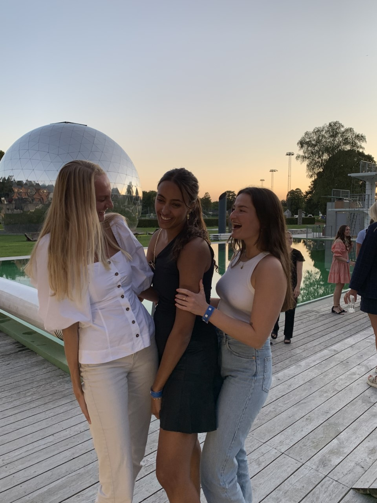
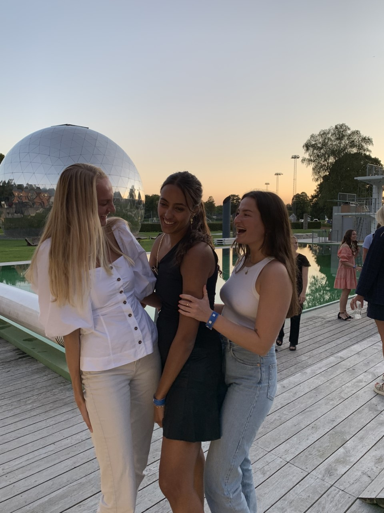

Mine Fritidsinteresser
I min fritid holder jeg meget af at være sammen med min familie og venner. Jeg er meget familie menneske og nyder at være i sommerhus med min familie, spille spil og gå en masse ture i naturen. Jeg har en stor interesse indenfor indretning, det med at gøre det personligt og stilrent på sammentid. Derudover har jeg hos mine forældre to hunde, som jeg holder utroligt meget af. Dem nyder jeg at gå lange ture med i skoven og på stranden. Det er alt sammen noget ting som gør mig glad og giver mig energi i hverdagen.